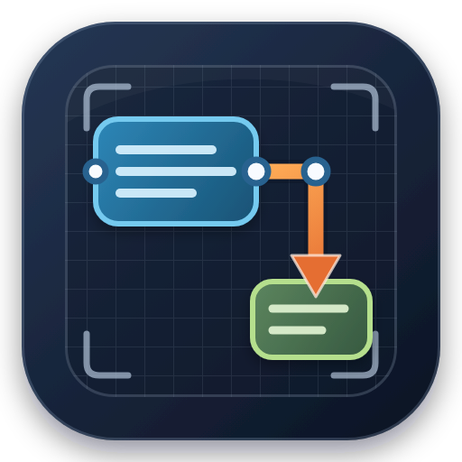

打开
保存
导出 ▾
导出高清图片
格式
PNG（透明/无损）
JPEG（白底）
WebP（高质量）
SVG 矢量源图
清晰度
1× 原始尺寸
2× 高清
4× 超清
8× 印刷级
背景
透明
白色
导出图片
撤销
重做
适应画布
标尺
网格线
网格吸附
智能参考线
未打开文件
文字
A
⌄
自动
主题颜色
标准色
最近使用
渐变填充
更多填充色
›
🎨
其他字体颜色(M)…
⌁
取色器(E)
字体
宋体 SimSun
微软雅黑
Times New Roman
Arial
楷体
−
＋
B
I
U
1.0×
1.15×
1.2×
1.5×
2.0×
2.5×
3.0×
Ω
最近使用
选择文字或含文字的图形后可用
更多设置(O)…
颜色
×
标准
自定义
高级
颜色(C)
新增
当前
R
G
B
十六进制
H
S
L
最近使用
#FFFFFF
RGB 255, 255, 255